例题 1
例 1 已知三角形 的三个顶点 都在平面 上，求证:该三角形的重心 也在平面 上.
学生阅读版 / 沪教版高中数学
必修第三册
第10章空间直线与平面 · 保留教材主线与原题
教材与正式教参整合
从平面几何到立体几何, 我们要注意借鉴平面几何中已有的一些概念、方法和结论, 更要特别注意立体几何和平面几何之间的区别. 以本章学习的空间直线与平面为例, 我们不仅要研究平面这类典型的空间图形, 而且要对“直线”有更为深刻的认识. 比如, 空间两条直线之间的位置关系，除了平行与相交，还有既不相交、也不平行的情况，从而出现了异面直线这种更为复杂的研究对象. 这些都与平面几何情况大不相同, 也使立体几何的内涵变得格外丰富多彩.
我们生活在一个三维世界中, 立体几何的学习有助于我们从几何的角度更好地理解现实的世界，并且锻炼我们的几何直观想象能力. 因此, 在学习中, 要着重注意几何的直观和内涵，不要仅仅停留在表面上的严格推导和论证, 还要多画一些示意图来帮助理解, 这样才能更好地掌握几何的实质，逐步培养自己的立体感和空间想象能力.
与平面几何中的点 (point) 与直线 (straight line) 一样, 平面 (plane)也是一个从实际生活中抽象出来的数学概念. 如图 10-1-1, 平静的水面、平整的墙面、太阳能反射板等都给了我们平面的形象.
图 10-1-1
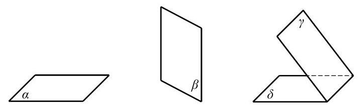
图 10-1-2
平面通常用一个小写希腊字母表示，如图 10-1-2 中的平面 等,有时也可以用一个或多个大写英文字母表示, 如平面 、平面 等. 在平面几何中我们已经知道,点是没有大小的, 直线是没有粗细并且可以无限延伸的; 类似地, 我们说, 平面是没有厚薄并且可以无限延展的.
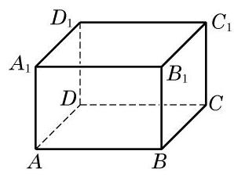
图 10-1-3
由于平面无边无界, 因此我们不可能将一个平面完整地画在纸上, 只能画其示意图. 习惯上, 我们用一个平行四边形来表示平面. 当平面是水平放置时, 通常把这个平行四边形的锐角画成 左右,且横边长约为邻边长的 2 倍. 如果一个平面被另一个平面遮挡住，应将被遮挡的部分画成虚线，以增强立体感，如图 10-1-2所示.
平面是立体几何中的一个基本图形. 长方体的每个面都是某个平面的一部分. 图 10-1-3 中,长方体 就可以看作是由六个平面所围成的空间图形.
下面, 我们来讨论点、直线与平面之间的位置关系. 我们把空间的直线和平面都看成是由点所组成的集合, 这样就可以借用集合的语言和符号来表示点、直线与平面之间的关系. 为了叙述方便,我们一般用大写的英文字母 等表示点,用小写的英文字母 等表示直线,用小写的希腊字母 等表示平面.
在空间, 点与直线、点与平面的位置关系如下:
| 位置关系 | 符号表示 | 图形表示 | |
| 点与直线 | 点 在直线 上,也称直线 经过点 | <img src="https://cdn.noedgeai.com/bo_d4slm1v7aajc73fspjsg_2.jpg?x=855&y=699&w=197&h=61&r=0"/> | |
| 点 不在直线 上,也称直线 不经过点 | <img src="https://cdn.noedgeai.com/bo_d4slm1v7aajc73fspjsg_2.jpg?x=853&y=796&w=200&h=86&r=0"/> | ||
| 点与平面 | 点 在平面 上,也称平面 经过点 | <img src="https://cdn.noedgeai.com/bo_d4slm1v7aajc73fspjsg_2.jpg?x=813&y=912&w=279&h=116&r=0"/> | |
| 点 不在平面 上,也称平面 不经过点 | <img src="https://cdn.noedgeai.com/bo_d4slm1v7aajc73fspjsg_2.jpg?x=812&y=1063&w=282&h=139&r=0"/> |
在图 10-1-3 的长方体 中, 直线 , 直线 平面 平面 等. 我们还可以发现,直线 在平面 上 (即直线 上的所有点都在平面 上),但直线 不在平面 上.
在平面几何中, 我们已经知道两点确定一条直线. 由此是否可以推测: 如果一条直线上有两个点在一个平面上, 那么整条直线都在这个平面上? 其实, 这正是人们经过长期的观察与实践总结出来的一个基本事实, 我们把它当作一个公理. 9
公理 1 如果一条直线上有两点在一个平面上, 那么这条直线上所有的点都在这个平面上.
这时, 我们说这条直线在这个平面上, 或者说此平面经过该直线. 如图 10-1-4, 公理 1 可用符号语言表述为:
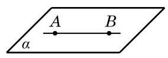
图 10-1-4
若点 ,点 ,则直线 .
公理 1 可以用来判断一条直线是否在某个平面上. 由公理 1 知, 不在平面上的直线与这个平面最多只有一个公共点.
如果直线 与平面 只有一个公共点 ,就称直线 与平面 相交于点 ,或称 是直线 与平面 的交点,记作 (图 10-1-5(1)). 如果直线 与平面 没有公共点,就称直线 与平面 平行,记作 或 (图 10-1-5(2)).
如无特别说明, 本章中所说的两个点、 两条直线、两个平面等均指它们不相重合的情形.
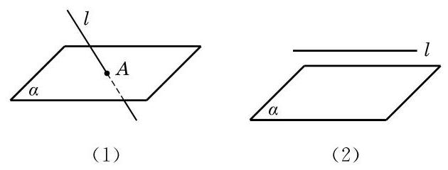
图 10-1-5
画图时,若直线 在平面 上时,应将直线 画在表示平面 的平行四边形的内部,如图 10-1-6 所示.
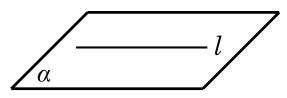
图 10-1-6
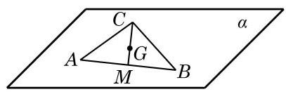
图 10-1-7
例 1 已知三角形 的三个顶点 都在平面 上，求证:该三角形的重心 也在平面 上.
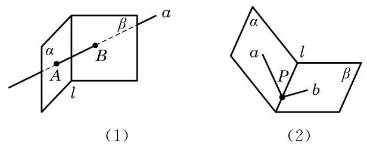
(第 1 题)
我们知道两点确定一条直线, 那么在空间要确定一个平面需要几个点呢?
生活中我们都有这样的经验: 三脚架在不平的地面上也可以稳固地支撑一部照相机；两个轮子的自行车在停止运动后要加上一个支撑脚才能稳定; 一扇门尽管有两个合页固定在门框上, 但仍然可以转动, 只有锁上后才可以固定下来. 这些例子都说明了一个事实, 那就是不在同一直线上的三点才能确定一个平面. 由此, 我们得到下面的公理.
公理 2 不在同一直线上的三点确定一个平面.
这里，“确定一个平面”意指“(经过这三个点)有且只有一个平面”或“存在唯一的平面”，如图 10-1-8 所示. 公理 2 可以具体表述为: 若 三点不在同一直线上,则存在唯一的平面 ,使得 三点均在此平面上.
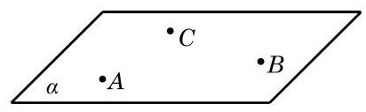
图 10-1-8
根据公理 2 可以得到下面的三个推论:
推论 1 一条直线和这条直线外的一点确定一个平面.
推论 2 两条相交直线确定一个平面.
推论 3 两条平行直线确定一个平面.
图 10-1-9 给出了上述三个推论的直观表示. 这些推论也可以用符号语言来表述，如推论 1 可以表述为:若 ，则存在唯一的平面 ,使得 .
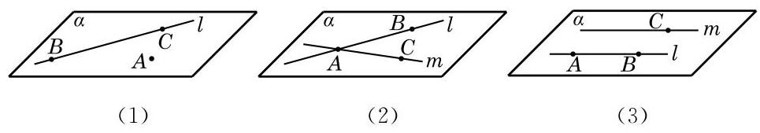
图 10-1-9
公理是进一步推理的基础, 是不证自明的事实, 但公理的推论是需要证明的. 下面，我们仅给出推论 1 的证明. 推论 2 的证明可以仿照推论 1 进行, 推论 3 的证明要借助于公理 4 ，我们分别把它们放在本节和下一节的习题中留给同学们完成.
证明 设 是直线 外的一点,在直线 上任取 和 两点 (图 10-1-9(1)). 由公理 2 可知, 和 三点能确定一个平面 . 因为点 ,由公理 1 可知, 所在的直线 ,从而平面 是由直线 和点 确定的平面.
公理 2 及其三个推论可以用来构造一个平面或者判断点与直线是不是在同一个平面上. 如果可以判定某个空间图形在同一个平面上, 那么它实际上就是一个平面图形, 从而可以用平面几何的知识和方法来处理相应的问题.
例 2 已知三条直线 和 两两相交,且不交于同一点. 求证: 直线 和 在同一平面上.
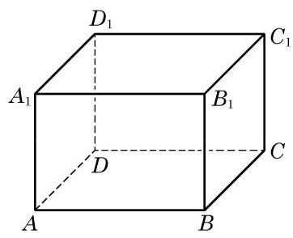
(第 2 题)
观察教室里的墙面，可以看到:相邻的两个墙面都有一条交线. 在一般的情况下, 我们有下面的公理.
公理 3 可具体表述为: 若两平面 及 有一个公共点 ,则它们有唯一的公共直线 ,且公共点 在 上,如图 10-1-11 所示.
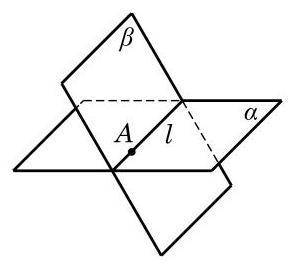
图 10-1-11
公理 3 如果两个不同的平面有一个公共点, 那么它们有且只有一条过该点的公共直线.
画两个相交平面时, 通常要画出它们的交线, 如图 10-1-11 所示; 画两个平行平面时, 要使表示这两个平面的相应平行四边形的对应边平行, 如图 10-1-12 所示. 注意, 在画图时, 凡被一个平面遮住的所有线条要画成虚线.
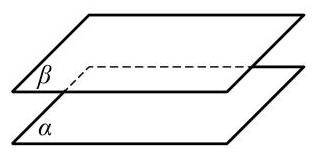
图 10-1-12
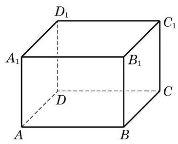
图 10-1-13
例 3 如图 10-1-13,在长方体 中,找出下列各对平面的交线:
(1)平面 与平面 ；
(2)平面 与平面 ；
(3)平面 与平面 ；
(4)平面 与平面 .
(1)设 与 的交点为 ， 必为平面___与平面___的公共点(答案不唯一)；
(2)画出平面 与平面 的交线.
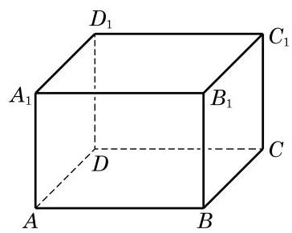
(第 3 题)
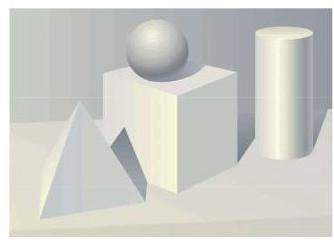
我们知道, 立体几何的研究对象是空间图形. 要将空间图形在一个平面上体现出来, 就需要在平面内画出具有立体感的空间图形的直观图.
为了把空间图形画得既富有立体感, 又能表达出图形各主要部分的位置关系和度量关系，我们通常采用斜二测画法画空间图形的直观图.
下面, 我们通过两个例子来体会用斜二测画法画空间图形直观图的方法与步骤.
例 4 用斜二测画法画一个水平放置的正六边形的直观图.
例 5 用斜二测画法画长、宽、高分别为 4、3、2 的长方体的直观图.
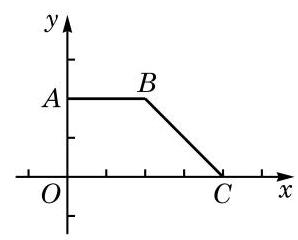
(第 2 题)
(1)点 ___直线 ；
(2)点 ___直线 ；
(3)点 ___平面 ；
(4)点 ___平面 ；
(5)直线 直线 ___；
(6)直线 平面 ___；
(7)直线 ___平面 .
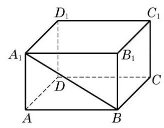
(第 1 题)
(1)点 在平面 上:___；
(2)平面 经过直线 :___；
(3)点 不在平面 上:___，
(4)直线 平行于平面 :___.
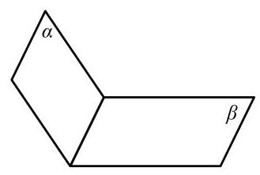
(第 2 题)
(1)三角形; (2)梯形； (3)四边形; (4)菱形.
(1)若空间四点共面，则其中必有三点共线；
(2)若空间四点中有三点共线, 则此四点必共面;
(3)若空间四点中任何三点不共线, 则此四点不共面;
(4)若空间四点不共面，则其中任意三点不共线.
A. 直线 ; B. 直线 ;
C. 直线 ; D. 以上均不正确.
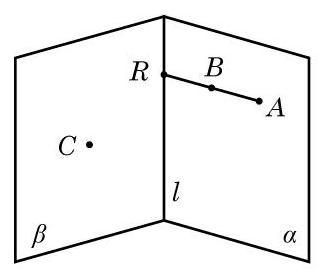
(第 6 题)
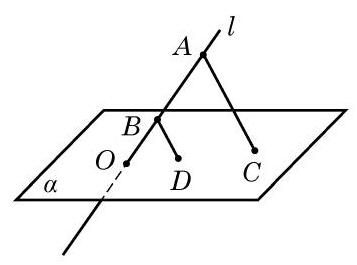
(第 7 题)
A. 1 条或 2 条; B. 2 条或 3 条;
C. 1 条或 3 条; D. 1 条或 2 条或 3 条.
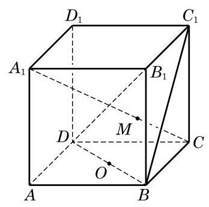
(第 3 题)
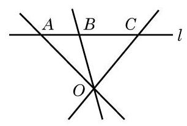
(第 4 题)
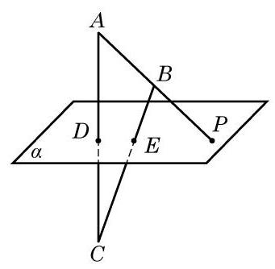
(第 5 题)
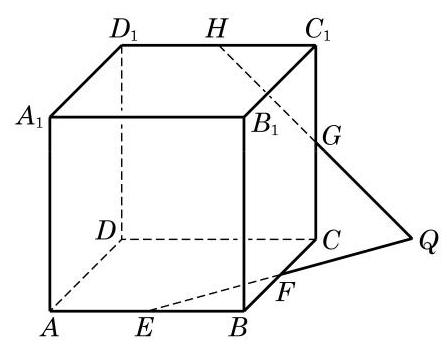
(第 6 题)